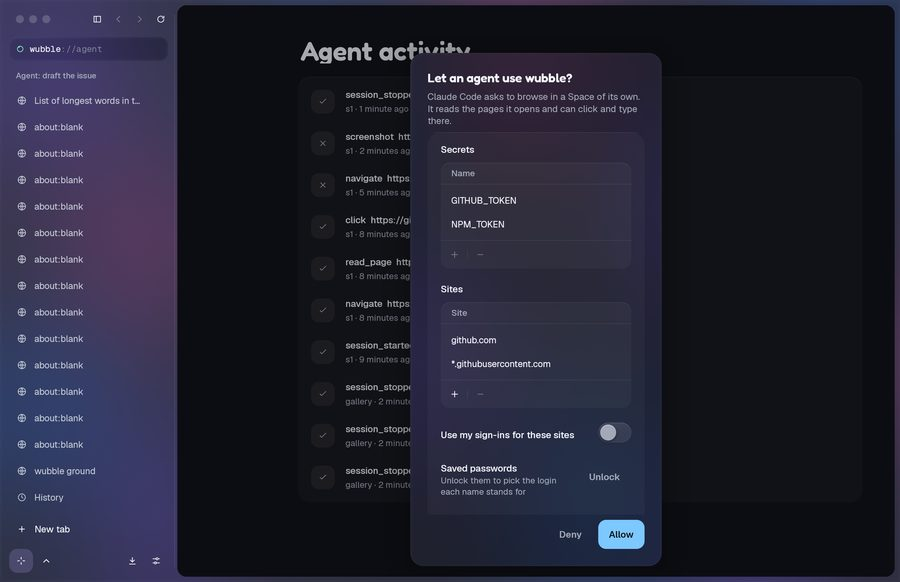
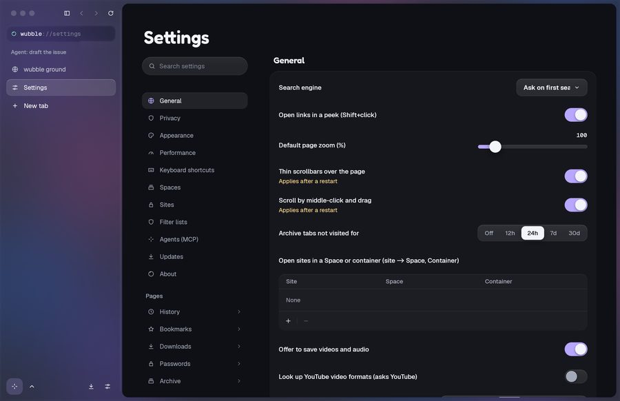

wubble is an open-source web browser for Linux and macOS. It runs on Chromium, so sites work as they do in Chrome, and its whole window, pages included, is drawn as one piece of glass on the GPU.
Tabs and Spaces
Vertical tabs in a sidebar that collapses to a rail or hides and peeks from the edge
Spaces, each with its own name, icon, colour and cookies
Pinned tabs, folders, and an archive for tabs you stopped visiting
Tabs you are not looking at go to sleep and wake when selected
The sidebarExtended, a narrow rail, or hidden. When hidden, the window's edge brings it back over the page.

Tabs that sleepTabs you are not looking at go to sleep and wake when selected.
Browsing
Split view: up to three pages side by side
A command bar that finds tabs, history and actions
Peek at a link without leaving the page (Shift+click)
Reader, find in page, zoom, PDF, print, screenshots, link hints, picture-in-picture
Video controls over any video: speed, loop, frame step, save
H.264 and AAC playback (protected, DRM video does not play)

Split viewUp to three pages side by side.
The command barFinds tabs, history and actions.
For AI agents
A built-in MCP server lets an agent on your computer (Claude Code, Codex, Gemini CLI, Cursor and others) browse in wubble
Off by default; every session needs your approval, runs in its own Space, and is limited to the sites you allow
Local only: a private socket, never a network port

Every session asks firstEach agent session waits for your approval and runs in a Space of its own.
Privacy, and the rest
A content blocker built on Brave's adblock-rust, with cookie-banner and tracking-parameter lists
An encrypted password manager with autofill
Nothing phones home: wubble makes no request of its own unless you turn it on (the update check is the one default)
Native menus, dialogs, downloads and settings, with search and a shortcut editor
History, bookmarks, downloads, a task manager and DevTools
Import Spaces, tabs, bookmarks and history from Zen, Firefox and Arc
Signed automatic updates

SettingsNative settings, with search and a shortcut editor.
CtrlTnew tab
CtrlLaddress
CtrlWclose
CtrlFfind
Ctrl\split
CtrlAltZsidebar
Coming: extensions, sync, Windows. The order is in the roadmap.
How it works
Chromium renders each page off-screen. The shell, written in Slint, draws those pages as GPU textures beside its own glass, so the sidebar, the page and every animation land in the same frame. Page frames never pass through the CPU.
The same command works on a Mac, or open the .dmg and drag wubble to Applications.
Windows is not available yet.
Checked downloadsThe script checks the archive's sha256, and the signatures of the archive and the release manifest too when minisign is installed. Add -s -- --require-signature to refuse without it.
Updateswubble checks GitHub when it opens and installs a new version on the next start, signature-checked. That check is the only request wubble makes by itself, and Settings, Updates turns it off.
UninstallAdd -s -- --uninstall to the install command. Your profile is kept.